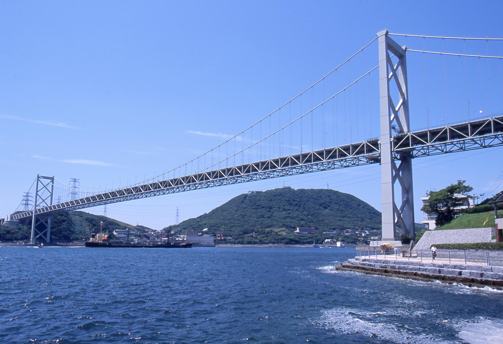

関門海峡

関門海峡とは？
関門海峡は、本州の下関市と九州の北九州市を隔てる海峡です。あの有名な壇ノ浦の戦いが起こった場所でもあります。 広大な関門海峡のシンボルともいえる、全長1068ｍ、海底からの高さ61ｍの関門橋がかかっています。そのすぐ そばにある、壇之浦パーキングエリア（下り線）とめかりパーキングエリア（上り線）がオススメ！どちらも 海峡の景色を楽しめることはもちろん、地元特産品を気軽に食べられるレストランや、お土産等も豊富にあります。 毎年夏に行われる関門海峡花火大会には、多くの来場者が訪れます。
(2017年 関門海峡Navi http：//www.kanmon.gr.jp)より
アクセス
・JR下関駅からバスで10分
・JR新下関駅からバスで25分
・下関ICから車で10分